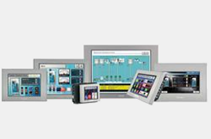
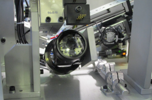

Prototypowy charakter naszych wyrobów i wysokie wymagania jakoœciowe naszych klientów stanowi¹ ogromne wyzwanie.
Aby kompleksowo realizowaæ ka¿de zlecenie od pocz¹tku do jego koñca - na terenie naszego zak³adu stworzyliœmy wszystkie dzia³y niezbêdne w procesie projektowania i budowy maszyn
- Dzia³ Konstrukcji Mechanicznej.
- Dzia³ Konstrukcji Elektrycznej i Programowania.
- Dzia³ Produkcji Czêœci.
- Dzia³ Monta¿u.
- Dzia³ Planowania.
- Dzia³ Zakupów, Logistyka, Kadry i inne dzia³y pomocnicze.
W Dziale Konstrukcji Mechanicznej nasza doœwiadczona kadra in¿ynierów projektuje maszyny wykorzystuj¹c oprogramowanie SolidWorks, BricsCad, Autocad, Autodesk Inventor
Wiêkszoœæ zaprojektowanych detali produkujemy samodzielnie w naszym Dziale Produkcji Czêœci. Pozwala nam to œledziæ postêpy wykonania na bie¿¹co - przy u¿yciu autorskiego programu zarz¹dzania produkcj¹ - SSP2.
W Dziale Konstrukcji Elektrycznej i Programowania projektanci i programiœci wykorzystuj¹ oprogramowanie BricsCad oraz EPLAN Electric P8 do tworzenia schematów elektrycznych.
Programujemy:
PLC Siemens Simatic S5 i Simatic S7 w jêzykach STL, LAD, FBD, SCL i Graph
PLC Allen-Bradley MicroLogix i SLC500 w LAD
PLC Allen-Bradley CompactLogix i ControlLogix w jêzykach Ladder, SFC, FBD i Structured Text
PLC Mitsubishi, GE-Fanuc / Fanuc, Omron
Panele HMI:
Siemens Simatic OP / TP, Multipanele MP oraz KT
Allen Bradley PanelView, PanelView Plus i PanelView Plus CE
Proface HMI

Mitsubishi, Ge-Fanuc / Fanuc, Omron
Serwonapêdy:
Siemens, Allen-Bradley, Bosch-Rexroth, Mitsubishi, Omron, Yaskawa, SEW, Lenze
Systemy Wizyjne:
Cognex, Keyence, Dalsa, Omron, DVT, National Instruments, Balluff
 |
 |
|